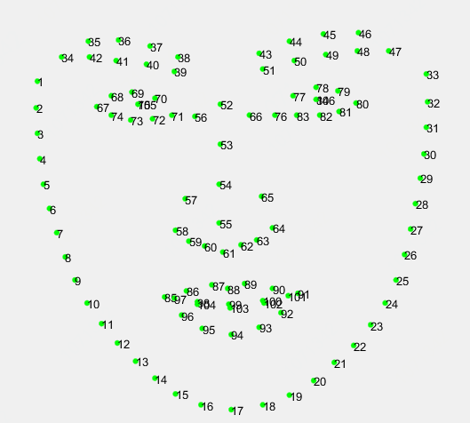

Please feel free to contact us if you have any suggestions to improve our workshop! fllc3_icme@163.com
Overview
Due to the global pandemic of COVID-19, people are recommended to wear facial mask for the sake of health and safety and the situation will continue in the long run. This apparently makes conventional facial landmark localization unfaithful (inaccurate) and inefficient. However, facial landmark localization is a very crucial step of facial recognition technology, which is very helpful in tracking the close contacts of COVID-19 patients to prevent the spread of the virus. Besides, it is also wildly used in facial pose estimation, face image synthesis, and etc. Therefore, we are hosting the 3rd grand challenge of 106-point facial landmark localization in conjunction with ICME 2021, aiming to improve the accuracy and efficiency of facial landmark localization in the real-world situation, especially on the masked faces.
The 1st and 2nd 106-point facial landmark localization competitions were held in conjunctive with ICME2019 and ICPR2020, respectively. There are more than 400 teams taking part in the competitions, e.g., Tinghua University, National University of Singapore, University of Michigan. Different from the prior two challenges [1][2], the 2021 edition contains more than 50,000 images of three kinds, real-masked, virtual-masked, and non-masked, which are largely varied in identity, pose, expression, and occlusion. In addition, a strict limitation of model weights is required for computational efficiency (the upper bound of computational complexity is 100MFLOPs, and the upper bound of model size is 2MB). We sincerely invite academic and industrial practitioners to participate in and together push the frontier along this direction.
Important Dates
| Description | Date |
|---|---|
| Challenge Begin | 11:59PM Pacific Time March 1, 2021 |
| Validation phase | 11:59PM Pacific Time March 1, 2021 |
| Release test images | 11:59PM Pacific Time April 1, 2021 |
| Model & Paper submission deadline | 11:59PM Pacific Time April 7, 2021 |
| Final evaluation results & Paper acceptance announcement | 11:59PM Pacific Time April 30, 2021 |
| Camera-ready paper submission deadline | 11:59PM Pacific Time May 7, 2021 |
Dataset Description
The landmark definition for the training/validation/test datasets is shown in Fig.1.
Figure1: The 106-key-point mark-up used for our annotations
Training dataset:
We collect an incremental dataset named JD-landmark-mask. Besides the face images in JD-landmark [3] dataset, we provide the virtual-masked face images by utilizing our virtual mask addition algorithm. This dataset, containing about 40,000 faces, is applied as the training dataset. It is accessible to the participants (with landmark annotations). Fig.2 shows some examples in which the first row refers to the real face image and the second row refers to the virtual masked image.

Figure2: Examples of training dataset. The first row: non-masked face image. The second row: virtual-masked image
- Download: The training dataset is available at Here, val and test dataset are available at Baidu Drive and Google Drive
Validation dataset:
It consists of 2000 in-the-wild non-masked images, and 2000 virtual-masked images which are generated by the same method as the training dataset. The participants’ models will be evaluated on this set before the final evaluation.
- Download: The training dataset is available at Here, val and test dataset are available at Baidu Drive and Google Drive
Test dataset:
It contains 2000 in-the-wild non-masked images and 2000 real-masked images which are collected from the internet. Please be notified that there are no virtual-masked images in the final evaluation and the test dataset is blind to participants throughout the whole competition. It will be used for the final evaluation.
- Download: The training dataset is available at Here, val and test dataset are available at Baidu Drive and Google Drive
Note: there are no virtual-masked images in the final evaluation and
the test dataset is blind to participants throughout the whole competition.
Evaluation criteria
Submissions will be evaluated on the area-under-the-curve (AUC) from the cumulative errors distribution (CED) curves. Because there are two types of images in test dataset, we will score on the arithmetic mean of the AUC. Besides, further statistics from the CED curves such as the failure rate and average normalized mean error (NME) will also be returned to the participants for inclusion in their papers.
The cumulative curve corresponding to the percentage of test images of which the error is less than a threshold ⍺ will be produced. The area-under-the-curve (AUC) is the area under the cumulative distribution curve calculated up to the threshold ⍺, then divided by that threshold. We set the value of ⍺ to be 0.08. Similarly, we consider each image with a point-to-point normalized mean error of α or greater as failure. NME is computed as:

where “x” denotes the ground truth landmarks for a given face, “y” denotes the corresponding prediction and “d” is computed as d=√(〖width〗_bbox* 〖height〗_bbox ). Here, 〖width〗_bbox and 〖height〗_bbox are the width and height of the enclosing rectangle of the ground truth landmarks. Note that only the successfully detected images will be evaluated for the NME.
Submission Guidelines
1. During validation phase, participants can submit their predicted results to our on-line evaluation server and get the performance on the validation set. Each team can only submit once per day.
2. During April 1, 2021-April 7, 2021, participants should send their model and paper to fllc3_icme@163.com for the final evaluation.
3. The authors acknowledge that if they decide to submit, the resulting curve might be used by the organizers in any related visualizations/results. The authors are prohibited from sharing the results with other contesting teams.
Additional Information
1. The dataset is available for non-commercial research purposes only.
2. You agree not to reproduce, duplicate, copy, sell, trade, resell or exploit for any commercial purposes, any portion of the images and any portion of derived data.
3. You agree not to further copy, publish or distribute any portion of annotations of the dataset. Except, for internal use at a single site within the same organization it is allowed to make copies of the dataset.
4. We reserve the right to terminate your access to the dataset at any time.
organizers


Sponsor
reference
[1] https://facial-landmarks-localization-challenge.github.io/
[2] https://fllc-icpr2020.github.io/home/
[3] Yinglu Liu, Hao Shen, Yue Si, Xiaobo Wang, Xiangyu Zhu, Hailin Shi, et al. "Grand Challenge of 106-Point Facial Landmark Localization." In 2019 IEEE International Conference on Multimedia and Expo (ICME) Workshop. IEEE, 2019.